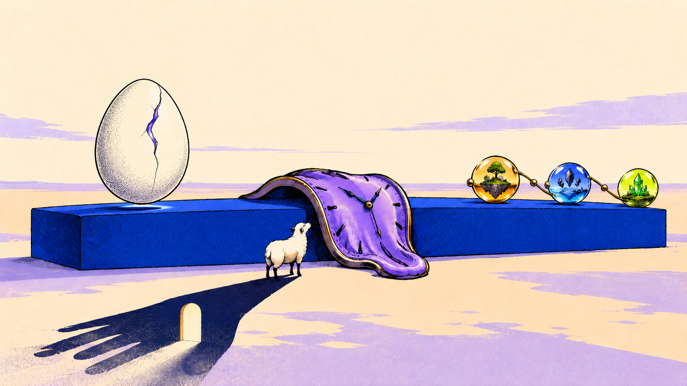
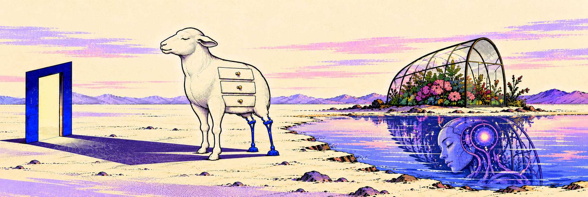
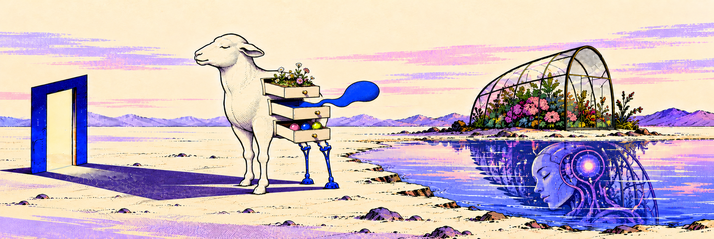

YOUNGSHEEP · CREATIVE & AI LAB
把奇怪的想法，
养成真正运行的产品。
每一件物体都有反应。试着靠近它们。

花花系统花与故事正在生长
金融 AI 系统知识正在汇成服务
Skills 与自动化能力正在自行组合
小样儿创意与 AI 产品实验室左右拖动长卷，或者打开羊身体里的抽屉。
拖动画布探索 →

YOUNGSHEEP · CREATIVE & AI LAB


花花系统花与故事正在生长
金融 AI 系统知识正在汇成服务
Skills 与自动化能力正在自行组合
小样儿创意与 AI 产品实验室左右拖动长卷，或者打开羊身体里的抽屉。